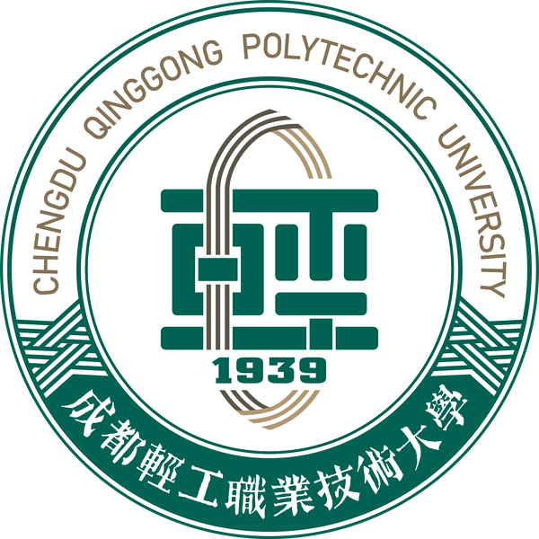

成都轻工职业技术大学横向科研项目验收报告| 项目编号 | HX2026-001 | 项目名称 | 某纺织企业智能化生产线改造技术服务项目 |
| 是否按期完成 | √是 □否 | 项目类型 | √技术开发 □技术咨询 □技术服务 |
| 成果形式(可多选) | √技术报告 □鉴定报告 √专利 □咨询报告 □其他 | ||
一、项目目标达成情况
项目严格按照合同约定,完成某纺织企业生产线智能化改造方案设计与实施:部署传感器网络与 PLC 集控系统,接入 MES 看板,实现三层架构贯通。核心技术指标全部达标并超过预期——生产线自动化率由原 45% 提升至 88%(原计划 ≥80%),生产效率提高 30%,设备故障率降低 26%,一次性通过客户组织的现场验收。
二、研究过程总结
项目分调研、方案设计、实施、联调与培训五个阶段推进。实施流程采用"周例会+节点评审"机制,与企业设备部、生产部建立双组长协作机制,累计开展现场技术协调 16 次;质量控制上执行方案评审、进场检验、隐蔽工程确认、联调测试四道关口,各节点均按期通过。
三、关键工作成果
提交《生产线智能化改造方案》《系统联调测试报告》《操作手册》等技术文档共 5 份;申请发明专利 1 项(已受理,"一种纺织生产线多工位联动控制方法");形成可复制的产线改造实施模板一套,已在我校另外两家合作企业推广试用。
四、进度与经费执行
项目周期 2026 年 1 月至 2027 年 12 月,较合同约定提前 20 天完成验收。合同经费 355000.00 元,到账 355000.00 元,累计支出 348000.00 元,各科目均未超支,经费使用经双方确认合规。
五、客户评价与效益
委托单位评价:项目团队专业响应迅速,交付成果满足订单激增需求,改造后生产线年产能提升约 300 万元,生产成本降低 12%。改造经验为当地同类中小企业智能化转型提供了示范,项目执行期间吸纳学生 1 名全程参与,实现产学研协同育人。
六、总结与展望
本项目实现了"改造一条线、沉淀一套方法、带动一个专业"的预期目标。后续拟围绕设备预测性维护与能耗优化开展第二期合作,并将实施模板进一步完善为校级横向项目技术积累。
七、结论
项目全面完成合同约定的全部内容,成果实用有效,经费使用规范,达到验收要求,同意结题。
注:本报告页数不限,多页时单面打印;签名处须手写。